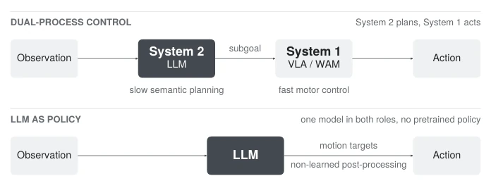
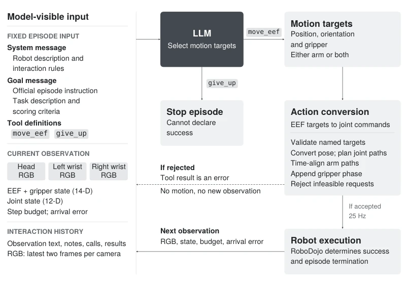
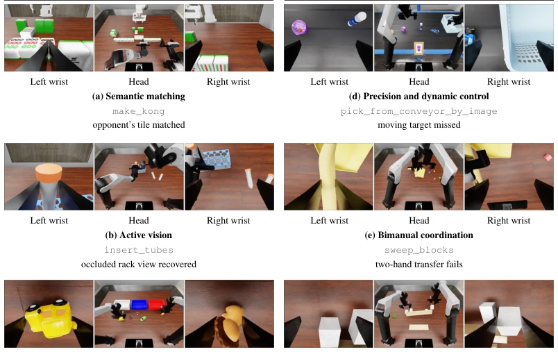
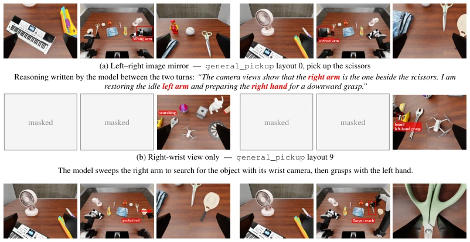

This paper places GPT-6 Astra on the RoboDojo stage, attempting to demonstrate that large models can directly function as robot policies without fine-tuning. The results are indeed stunning; Astra ranked first in comprehensive score across 42 tasks, surpassing 40 pre-trained policies. However, do not get too excited too soon; it is a "biased student", with strong semantic understanding but fine manipulation and dynamic control are full of pitfalls. More painfully, real-world testing was halted directly due to hardware damage caused by erratic movements. Other models such as GPT-5.5 and DeepSeek-Flash performed miserably, indicating this approach is not a universal solution. The so-called "context learning" did not bring universal improvement, only enabling self-correction in individual cases. Overall, LLM as policy is a good story, but it remains a vast distance away from reliable deployment due to the lack of physical common sense.
研究动机Motivation
现有具身 AI 通常采用双过程架构：System 1 负责高频动作执行（如 VLA 模型 Brohan et al., 2023），System 2 负责高层规划（如 SayCan Ahn et al., 2023）。这种分工虽稳，但限制了端到端的泛化能力。此前有研究尝试用 GPT-4 直接生成轨迹（Kwon et al., 2024），但依赖外部检测模型。近期报告暗示前沿模型直接控制能力在提升（Berman et al., 2026），但缺乏统一基准对比。本文旨在回答：LLM 能否在无微调情况下直接作为操作策略？现有工作多将 LLM 仅作为规划器，缺乏对 LLM 直接输出动作目标能力的系统性评估，且真机测试难以规模化。RoboDojo 提供了 42 任务的统一基准，填补了 LLM-as-policy 与预训练策略直接对比的空白。
Existing embodied AI typically adopts a dual-process architecture: System 1 is responsible for high-frequency action execution (e.g., VLA models Brohan et al., 2023), System 2 is responsible for high-level planning (e.g., SayCan Ahn et al., 2023). Although this division of labor is stable, it limits end-to-end generalization capabilities. Previous research attempted to use GPT-4 to directly generate trajectories (Kwon et al., 2024), but relied on external detection models. Recent reports suggest frontier models' direct control capabilities are improving (Berman et al., 2026), but lack unified benchmark comparisons. This paper aims to answer: Can LLMs directly serve as manipulation policies without fine-tuning? Existing work mostly treats LLMs only as planners, lacking systematic evaluation of LLMs' direct action output capabilities, and real-world testing is difficult to scale. RoboDojo provides a unified benchmark of 42 tasks, filling the gap in direct comparison between LLM-as-policy and pre-trained policies.

Figure 1: Two ways to turn an observation into an executable action. Top: a dual-process controller separates a language model for semantic planning from a pretrained motor policy for execution. VLA denotes a vision language action model; WAM denotes a world action model. Bottom: in the LLM- as-policy setting, the language model selects motion targets directly. Non-learned post-processing converts these targets into executable commands without a pretrained motor policy.
The core of the method is "LLM as Policy", meaning the language model directly selects motion targets, without passing through pre-trained policies in between. The overall process is divided into three steps: First, Prompt construction includes system instructions, task goals, and tool definitions, the model receives multi-view RGB and state information; Second, the model outputs end-effector targets (position, pose, gripper) in world coordinates via the `move_eef` tool, unspecified dimensions remain as is; Finally, a non-learning module is responsible for action conversion, including verifying target feasibility, inverse kinematics calculation, joint path planning, and time alignment, executed at 25Hz frequency. This setting strictly keeps LLM weights frozen, with no task fine-tuning. Unlike VLA, here LLM directly outputs motion targets rather than action distributions, relying on geometric post-processing rather than learned control policies. Experiments also explored context learning capabilities under single-shot demonstrations and perturbations, observing whether the model can correct actions within a single episode.

Figure 2: The model-facing context and execution loop. A frozen language model chooses world- frame end-effector (EEF) targets at the grasp point through move_eef. The action conversion module is non-learned. It validates the request, converts grasp-point targets to flange poses, plans joint paths, and constructs executable joint commands. Requested gripper changes follow the arm- motion phase. The two return routes are the two branches of a request. A rejected target returns an error as the tool result and causes no motion, so the model retries against the same observation; this is the dashed route. An accepted target returns its planned duration, executes, and only then produces the next observation with the achieved state and arrival error; this is the solid route. give_up requests term
Evaluated 3 LLMs (GPT-6 Astra, GPT-5.5, DeepSeek-Flash) and 40 public pre-trained policies on the RoboDojo simulation benchmark. Astra achieved 22.48% average success rate in 2100 trials, comprehensive score 28.97, surpassing all baselines. But capability distribution is polarized: strong on open tasks, weak on precision/dynamic/bimanual tasks. GPT-5.5 and DeepSeek-Flash success rates were less than 2%, a gap of 25 times. Real-world testing was interrupted due to unsafe actions. Regarding context learning, single-shot demonstrations actually lowered overall success rate, but under perturbations (such as coordinate inversion, visual occlusion) it was observed that the model could perform in-episode correction. This indicates LLMs possess certain adaptability, but lack of physical common sense leads to insufficient precision.

Figure 3: Capabilities and limits of Astra used as a policy. Each panel shows one episode in three camera views; the task and observed evidence appear below. Panels (a)–(c) show capabilities and panels (d)–(f) show limits. These examples establish occurrence, not frequency.

Figure 4: The observations the model receives under three perturbations, defined in Appendix D.2. Each row is one condition, named under its frames; the left group of three views is an early turn and the right group a later turn of the same episode. The line under row (a) is the model’s own reasoning from the episode, and the lines under rows (b) and (c) describe an observed behaviour instead. Row (a) shows real frames from the flip_vision_lr episode on layout 0. The mirror reverses apparent left–right positions without changing camera identities. Under (b) only the right wrist camera is available, and the masked cells mark the views the model does not receive. Row (b) comes from the supplementary rerun with 170 calls and 400 environment steps; the standard-budget run failed. Under (c) eve